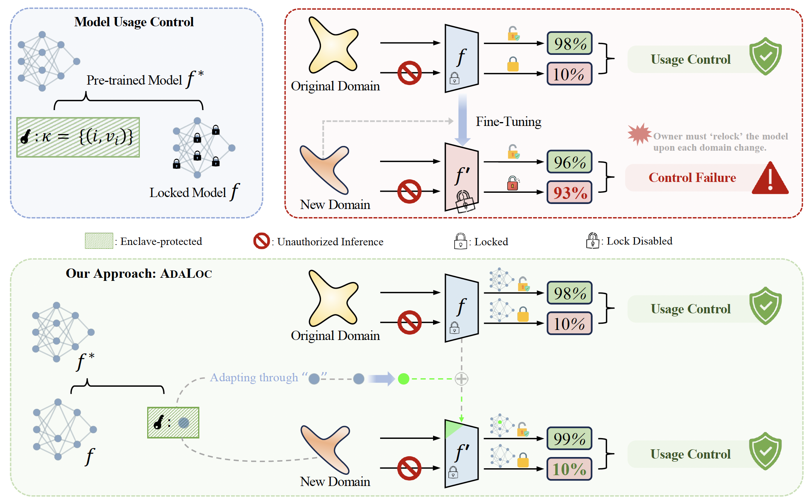
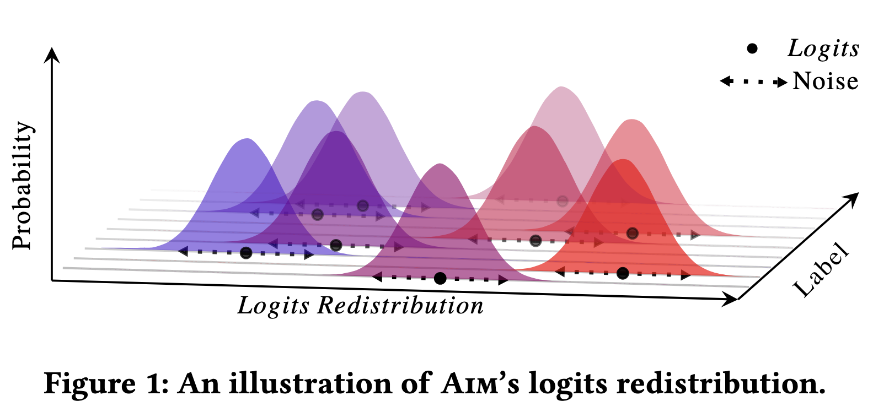

Zihan Wang
About Me
I am a PhD student at the University of Queensland, working under the supervision of A/Prof. Guangdong Bai and Dr. Jason Xue. I’m currently serving as the HDR representative for the CSS discipline. My research is generously supported by the RTP Scholarship and CSIRO’s Data61 Top-up Scholarship. I am also honored with the Google PhD Fellowship, 2024.
Recent Projects
Model Usage Control
- Neuron-level Usage Control: CoreLocker@IEEE S&P, AdaLoc
- Logit-level Model Modulation: AIM@WWW
- Neural Network Verification: WRAACT@OOPSLA
Data Usage Control
- Model-specific Authorization: Non-transferable Examples
- Algorithmic Purpose Limitation: AlgoSpec@USENIX Security
- Token-level Gradient Inversion: Grab@ACM CCS
- Multi-modal Membership Inference: M⁴I@NeurIPS
News
- [Nov. 2025] Our paper on GIA defense has been accepted to AsiaCCS’26.
- [Sep. 2025] I will serve as a reviewer for ICLR’26 and CVPR’26.
- [Aug. 2025] Our paper on NNV has been accepted to OOPSLA’25.
- [Jul. 2025] I will serve as a PC member for ACM CCS LAMPS’25.
- [Mar. 2025] I will serve as a reviewer for IEEE TDSC, IEEE TIFS, and TSC.
- [Jan. 2025] Our paper on AI model modulation has been accepted to WWW’25.
- [Oct. 2024] Awarded the Google PhD Fellowship!
- [Oct. 2024] I will serve as a PC member for PAKDD’25.
- [Aug. 2024] Our paper on GIA in language models has been accepted to ACM CCS’24.
- [Mar. 2024] Our paper on AI model usage control has been accepted to IEEE S&P’24.
- [Feb. 2024] Our paper on purpose limitation has been accepted to USENIX Security’24.
Older news (2022–2023)
- [Dec. 2023] Our paper on deep data hiding has been accepted to IEEE TCSS.
- [Oct. 2023] Our paper on knowledge distillation has been accepted to WACV’24.
- [Aug. 2023] Our paper on formalizing LMs perturbation has been accepted to ICFEM’23.
- [Dec. 2022] Graduated with a B.CS (Adv.) from the University of Adelaide (2020–22).
- [Nov. 2022] Presented at my first conference, NeurIPS, in New Orleans!
- [Sep. 2022] Our paper on multi-modal model MIA has been accepted to NeurIPS’22.
Selected Publications
-
 S&P'24
IEEE Symposium on Security and Privacy (S&P), Mar. 2024.PDF Website
S&P'24
IEEE Symposium on Security and Privacy (S&P), Mar. 2024.PDF WebsiteBibTeX
@inproceedings{wang2024corelocker, title={CoreLocker: Neuron-level Usage Control}, author={Wang, Zihan and Ma, Zhongkui and Feng, Xinguo and Sun, Ruoxi and Wang, Hu and Xue, Minhui and Bai, Guangdong.}, booktitle={IEEE Symposium on Security and Privacy (S\&P)}, doi = {10.1109/SP54263.2024.00182}, url = {https://doi.ieeecomputersociety.org/10.1109/SP54263.2024.00182}, pages={2497--2514}, year={2024} } -
 Preprint'25PDF
BibTeX
@inproceedings{wang2025nontransfer, title={Catch-Only-One: Non-Transferable Examples for Model-Specific Authorization}, author={Wang, Zihan and Ma, Ethan and Ma, Zhongkui and Liu, Shuofeng and Liu, Akide and Wang, Derui and Xue, Minhui and Bai, Guangdong}, booktitle={arXiv preprint arXiv:2510.10982}, year={2025} } -
 Preprint'25
PDF
Preprint'25
PDFBibTeX
@inproceedings{wang2025nontransfer, title={Catch-Only-One: Non-Transferable Examples for Model-Specific Authorization}, author={Wang, Zihan and Ma, Ethan and Ma, Zhongkui and Liu, Shuofeng and Liu, Akide and Wang, Derui and Xue, Minhui and Bai, Guangdong}, booktitle={arXiv preprint arXiv:2510.10982}, year={2025} } -
 WWW'25The Web Conference (WWW), Apr. 2025.PDF
BibTeX
@inproceedings{wang2025aim, title={AI Model Modulation with Logits Redistribution}, author={Wang, Zihan and Ma, Zhongkui and Feng, Xinguo and Mei, Zhiyang and Ma, Zhiyong and Wang, Derui and Wang, Hu and Xue, Minhui and Bai, Guangdong.}, year = {2025}, publisher = {Association for Computing Machinery}, address = {New York, NY, USA}, url = {https://doi.org/10.1145/3696410.3714737}, doi = {10.1145/3696410.3714737}, booktitle = {Proceedings of the ACM Web Conference 2025}, location = {Sydney, Australia}, series = {WWW'25} } -
 OOPSLA'25
The ACM SIGPLAN Conference on Object-Oriented Programming, Systems, Languages, and Applications (OOPSLA), Oct. 2025.PDF
OOPSLA'25
The ACM SIGPLAN Conference on Object-Oriented Programming, Systems, Languages, and Applications (OOPSLA), Oct. 2025.PDFBibTeX
@inproceedings{} -
 TCSS
IEEE Transactions on Computational Social Systems (TCSS), Dec. 2023.PDF
TCSS
IEEE Transactions on Computational Social Systems (TCSS), Dec. 2023.PDFBibTeX
@article{wang2023data, title={Data hiding with deep learning: a survey unifying digital watermarking and steganography}, author={Wang, Zihan and Byrnes, Olivia and Wang, Hu and Sun, Ruoxi and Ma, Congbo and Chen, Huaming and Wu, Qi and Xue, Minhui}, journal={IEEE Transactions on Computational Social Systems}, year={2023}, publisher={IEEE} } -
 NeurIPS'22
Neural Information Processing Systems (NeurIPS), Sep. 2022.PDF
NeurIPS'22
Neural Information Processing Systems (NeurIPS), Sep. 2022.PDFBibTeX
@inproceedings{hu2022m, title={M $\^{} 4$ I: Multi-modal Models Membership Inference}, author={Hu, Pingyi and Wang, Zihan and Sun, Ruoxi and Wang, Hu and Xue, Minhui}, journal={Advances in Neural Information Processing Systems}, volume={35}, pages={1867--1882}, year={2022} } -
 USENIX'24
USENIX Security, Feb. 2024.PDF
USENIX'24
USENIX Security, Feb. 2024.PDFBibTeX
@inproceedings{liu2024purpose, title={Being Transparent is Merely the Beginning: Enforcing Purpose Limitation with Polynomial Approximation}, author={Liu, Shuofeng and Wang, Zihan and Xue, Minhui and Wang, Long and Zhang, Yuanchao and Bai, Guangdong.}, journal={USENIX Security}, year={2024} } -
 CCS'24
ACM Computer and Communications Security Conference (CCS), Aug. 2024.PDF
CCS'24
ACM Computer and Communications Security Conference (CCS), Aug. 2024.PDFBibTeX
@inproceedings{ } -
 WACV'24
IEEE/CVF Winter Conference on Applications of Computer Vision (WACV), Oct. 2023.PDF
WACV'24
IEEE/CVF Winter Conference on Applications of Computer Vision (WACV), Oct. 2023.PDFBibTeX
@inproceedings{liu2024bpkd, title={BPKD: Boundary Privileged Knowledge Distillation For Semantic Segmentation}, author={Liu, Liyang and Wang, Zihan and Phan, Minh Hieu and Zhang, Bowen and Ge, Jinchao and Liu, Yifan}, booktitle={Proceedings of the IEEE/CVF Winter Conference on Applications of Computer Vision}, pages={1062--1072}, year={2024} }